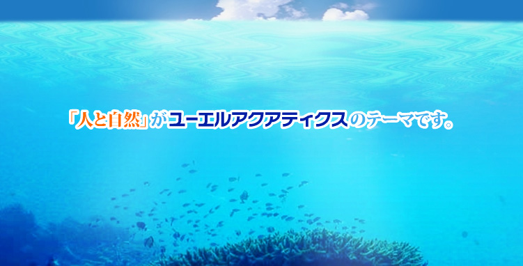

構造物調査 →
音響探査やROVを用いた水中構造物の精密点検・調査を実施します。
UL AQUATICS には、UNLIMITED LOGIC OF AQUATICS "水生の無限の力"を意味しています。
私達は、"水生の無限の力"を感じて日々の仕事に取り組んでおります。

アセットマネジメント調査（福井、愛知、兵庫、和歌山、山口、福岡、鹿児島 他）/ 横浜港・玄界島漁港等の被災状況調査
関空連絡橋点検 / 淀川大堰・広川ダム・一庫ダム等の構造物調査 / 天満川樋門・日光川水門維持管理計画策定
九頭竜川・淀川・福岡市内河川橋梁健全度調査 / パイルベント橋脚現況調査（大阪市・鳥取県・広島市等）
各原子力・火力発電所環境モニタリング / 羽田空港・大阪湾・博多湾等の濁度監視・ADCP曳航観測
関西空港島・中部空港島での漁業生物観察 / 藻場・アマモ場観察 / 魚礁設置効果判定および付着生物調査
淀川・相模川・木曽川等の流量観測・深浅測量 / 京都市河川水質調査 / アスベスト・PCB・騒音振動調査
NEXCO新名神高速道路・湯浅御坊道路水文調査 / 国土交通省清滝生駒道路・洲本バイパス水文調査業務
和歌山県・兵庫県・大阪府下での井戸戸別聞き取り（井戸調査A・B） / ため池台帳・農業用水系統図作成
自記式水位計による連続観測 / 電磁流速計を用いた断面法・容器法流量観測 / 谷・渓流の源頭調査
水性の眼を持って業務に取り組ませていただき、陸性の眼も育ませていただいて30余年。
蓄積した有用な経験をもとに、高品質な成果をお約束できる企業性を発展・改善させて参ります。
社内に7名の潜水技士が内在。陸上部と水中部を別々の業者に頼ることなく、3Dの視点で一括調査することでズレ・モレを防ぎます。
特許技術「クリアビュー（無視界・不良視界水中撮影機）」をはじめ、ADCP多層流向流速計や狭小域撮影システムなど自社機材を完備。
2026.07.01 ホームページをリニューアルしました。
一緒に「水生の無限の力」を探求する仲間を募集しています。